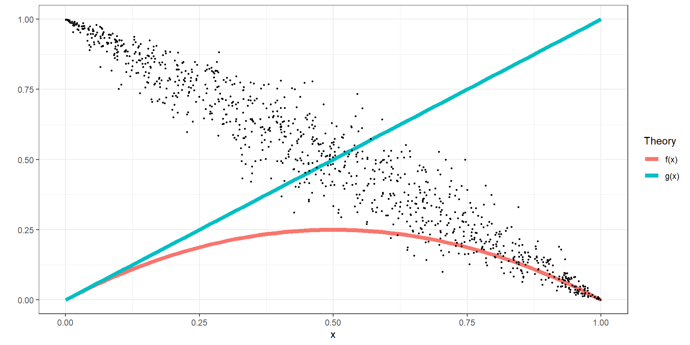

1 Introduction
1.1 Boring stuff first: Expectation for class
- We will start and finish on time
- Attendance is expected
- All due dates are final outside of excused absences
- You are checking your UToledo email
- You have read and understand the Syllabus
- For all classroom experiments, at least one person will be paid. You will understand the payment mechanism before starting an experiment.
1.2 What will we be studying?
- Insights from Psychology
- Especially judgment & decision-making
- Extensions of “standard” (non-behavioral) economic theory
- Markets
- Choice theory
- Games
- Experimental methods
- Non-experimental methods
1.3 Doing economic research without experiments
Research question \(\rightarrow\) I need data
- Data might not exactly answer the research question
- Often difficult to establish a causal relationship
- Often requires assumptions to be made about the data that you cannot test.
I have data \(\rightarrow\) what questions can I answer?
- Limits the questions you can answer
- Still difficult to establish a causal relationship
- Still (often) requires untestable assumptions
1.4 Economic experiments
We will be using economic experiments to learn about concepts in Behavioral Economics.
Mostly, we will use laboratory experiments
- Use people who have volunteered to participate. Usually undergrads.
- In this class: you
- Give them a task to perform, and observe their behavior.
- Pay them money based on their decisions
1.5 Why pay money?
Mankiw’s 10 Principles of Economics: “4. People respond to incentives”
If I pay you enough, I will have a good idea about what your incentives are.
This means that:
- Participants need to understand {} decisions determine payments
- Explain to participants how this works before they make decisions (and maybe verify)
- Participants need to believe that decisions will determine payments
- The experimenter will never lie to participants
- Payments need to care enough about the reward mechanism that they will respond to it
- We can’t pay you in chocolate or Monopoly money, or ask you to make hypothetical choices. We use US dollars!
1.6 How this will work for ECON4/6260
I have approval from the Department of Economics to pay you in US dollars
If I pay you, I will need to record your name and how much I paid you
I don’t have enough to pay everybody every time. I will randomly select (at least) one person to be paid after each experiment. You will not know who is getting paid until all decisions have been made.
As this is an online class, I will give you several choices of how you can be paid
This is not my money, so don’t feel badly about taking it
Don’t rely on it for lunch, car payments, etc.
1.7 And now for our first experiment
…
1.8 Reasons for running an experiment
Studying theoretical predictions
- Point and comparative static predictions
- Comparing the predictions of two or more theories
Studying behavioral assumptions
- Maybe a theory performs poorly. Can we work out which assumption(s) is (are) causing this?
- E.g. Are people selfish? Do people maximize expected value? Do people ignore sunk costs?
Establishing behavioral regularities
- Does the theory make more than one prediction? (multiple equilibria)
- Explore behavior to help us make better behavioral assumptions
Further reading:
Nikiforakis, Nikos. “For the student: experimental economics.” Australian Economic Review 43, no. 3 (2010): 337-345.
1.9 Studying theoretical predictions - I
Suppose that you have a theory that makes a prediction \(f(x)\) for situation \(x\).
e.g.:
- When the temperature is \(x^\circ\mathrm F\), \(f(x)=10+3x\) pints of ice cream will be sold
Point predictions: Given situation \(x\), \(f(x)\) will happen
- When the temperature is \(90^\circ \mathrm F\), \(280 = 10 + 3\times 90\) pints of ice cream will be sold
Comparative static predictions: When \(x\) increases, \(f(x)\) increases (or decreases, or nothing happens to \(f(x)\))
- When temperature increases, ice cream sales increase.
- When temperature increases by \(1^\circ \mathrm F\), ice cream sales increase by 3 pints.
When are each of these useful?
1.10 Studying theoretical predictions - II
Comparing two or more theories
I have two theories about how \(x\) affects an outcome. These theories are \(f(x)\) and \(g(x)\). I wish to understand whether one makes better predictions than another.
x<-seq(0,1,length=101)
y<-x*(1-x)
pltData<-data.frame(y,x)
pltData$Theory <- "f(x)"
tmp<-pltData
tmp$y<-x
tmp$Theory<-"g(x)"
pltData<-rbind(pltData,tmp)
xdata<-runif(n=1000)
ydata<-1/(1+exp(-((log(xdata)-log((1-xdata)))+0.2*rnorm(n=1000))))
dataXY<-data.frame(xdata,ydata)
plt<-(
ggplot(pltData,aes(x=x,y=y,color=Theory))
+geom_line(size=2)
+geom_point(data=dataXY,aes(x=xdata,y=ydata),size=0.5,color="black")
+theme_bw()
+xlab("x")
+ylab("")
)
plt
1.11 Studying theoretical predictions - III
Comparing two or more theories: Sometimes both are important!
xdata<-runif(n=1000)
group<-(runif(n=1000)<0.7)
yprediction<-xdata*(1-xdata)
yprediction[group]<-xdata[group]
ydata<- 1/(1+exp(-((log(yprediction)-log((1-yprediction)))+0.4*rnorm(n=1000))))
dataXY<-data.frame(xdata,ydata)
plt<-(
ggplot(pltData,aes(x=x,y=y,color=Theory))
+geom_line(size=2)
+geom_point(data=dataXY,aes(x=xdata,y=ydata),size=0.5,color="black")
+theme_bw()
+xlab("x")
+ylab("")
)
plt
1.12 Studying theoretical predictions - IV
Comparing two or more theories: Sometimes they are all useless
xdata<-runif(n=1000)
yprediction<-1-xdata
ydata<- 1/(1+exp(-((log(yprediction)-log((1-yprediction)))+0.4*rnorm(n=1000))))
dataXY<-data.frame(xdata,ydata)
plt<-(
ggplot(pltData,aes(x=x,y=y,color=Theory))
+geom_line(size=2)
+geom_point(data=dataXY,aes(x=xdata,y=ydata),size=0.5,color="black")
+theme_bw()
+xlab("x")
+ylab("")
)
plt
1.13 Economic experiments and causality
Conduct a study that resembles a drug trial.
Often referred to as a “randomized controlled trial”
Drug trials:
- Randomly assign people to two groups
- One group gets the treatment (i.e. they get the drug)
- One group doesn’t get the drug (or a placebo)
- Random assignment ensures that differences between groups’ health outcomes could only be due to the drug
Economic experiments:
- Instead of health outcomes, we are interested in peoples’ decisions
- Instead of drugs, we will be treating people with different incentives
- Many field experiments use this format, e.g the work associated with the 2019 Nobel prize in Economics
1.14 Complement to data from outside the lab
Example: ECON1200 model of a market.
- Buyers with values
- Sellers with costs
- If we know all of these, we can calculate the equilibrium price and quantity
Outside the lab:
- Buyers might not want to tell you their values
- Sellers will probably lie to you about costs
- We can easily observe price and quantity, but not the values and costs that got us there
Inside the lab:
- We can assign buyers and sellers values and costs
- Hence, we know what the theory predicts, and we can observe the outcomes.
1.15 A roadmap for this course
Usually, I will introduce a topic with an experiment.
Then, you will have a homework assignment based on the data from the experiment
We will discuss this in the next class
For 6260 students, we will use our extra hour mostly as a reading group. I will assign the first few readings, but I am very open to suggestions.
1.16 Outline of topics covered (not necessarily in order)
- Game theory
- How do economists model interactions in small groups?
- Key concepts: Nash Equilibrium, best response, mixed and pure strategies
- Single-shot games, sequential games, Bayesian games
- Behavioral Game Theory
- Incorporating insights from decision theory into game theory
- Noisy behavior in equilibrium
- Other departures from the Homo Economicus assumption
- Non-standard preferences
- Preferences & Decisions
- Risk
- Probability judgment
- Other-regarding preferences